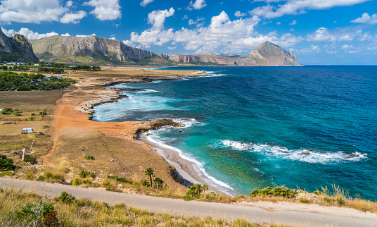
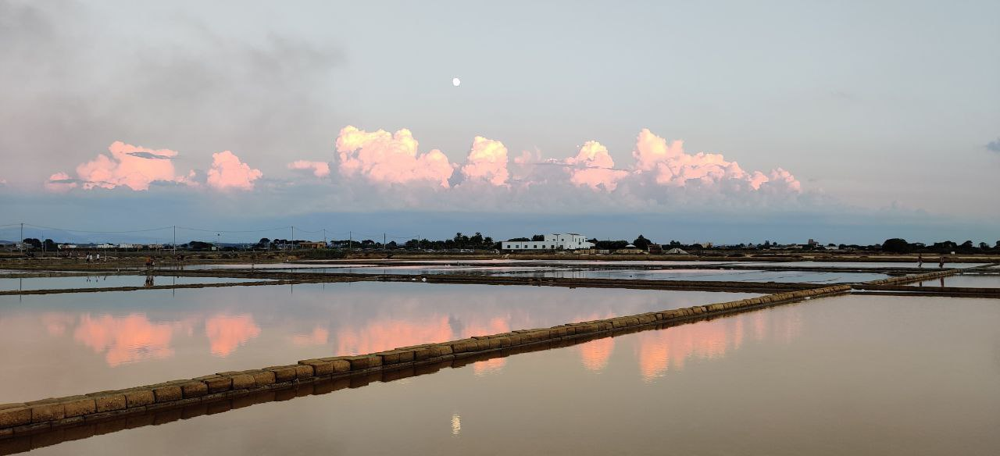
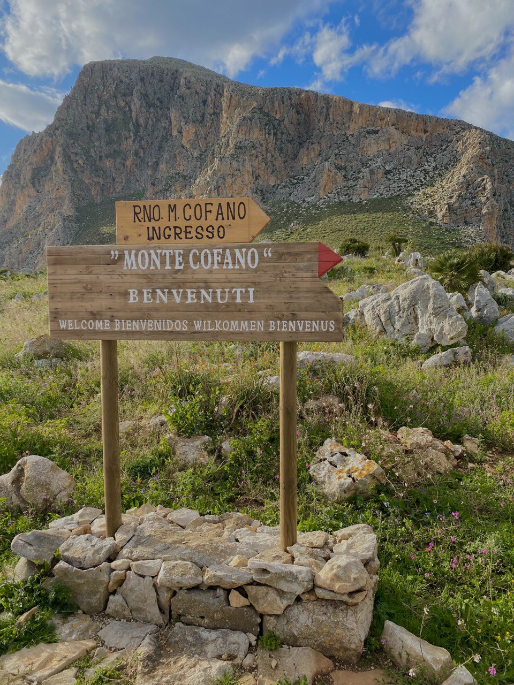
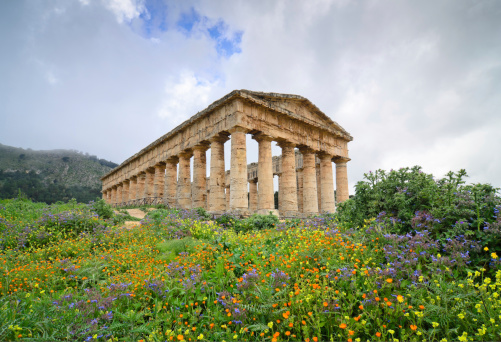
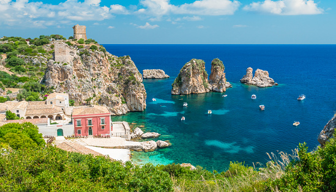

Erice
Erice è un antico borgo medievale situato sulla cima del Monte Erice,
a circa 750 metri sul livello del mare, che offre una vista mozzafiato sulla costa occidentale della Sicilia.
Conosciuto anche come "la città delle cento chiese", Erice conserva ancora intatta
la sua struttura originaria con le mura di cinta, le torri difensive,
le stradine lastricate e le suggestive piazzette.
Visitando Erice avrete la sensazione di essere catapultati indietro nel tempo,
grazie alle numerose leggende e tradizioni che permeano l'atmosfera del borgo.
Inoltre, Erice è famosa per la produzione di dolci tipici, come le genovesi e le cassate,
che potrete gustare nei numerosi bar e pasticcerie del centro storico.
In estate, il borgo ospita anche numerosi eventi culturali e manifestazioni folkloristiche,
come il Torneo della Balestra e la Festa di San Giovanni Battista, che vi
permetteranno di immergervi ancora di più nella vita del borgo medievale.

Macari
Macari è una località costiera della Sicilia che offre uno scenario naturale incredibile
e una spiaggia di rara bellezza.
Qui troverai una spiaggia selvaggia, caratterizzata da una sabbia bianca e fine e da un mare
cristallino, dove potrai rilassarti al sole e goderti la quiete della natura.
Macari è il luogo ideale per coloro che vogliono allontanarsi dal trambusto della città e
immergersi nella natura incontaminata. La zona offre anche numerose calette nascoste,
ideali per fare snorkeling e scoprire la fauna marina locale.

Saline di Trapani
Le saline di Trapani sono un vero e proprio tesoro della Sicilia, un luogo di grande
suggestione storica e paesaggistica.
Qui, in una zona unica al mondo, tra il mare e la costa, si possono ammirare i grandi
bacini di sale che da secoli sono stati una delle principali fonti di sostentamento
per la popolazione locale.
I mulini a vento e le torri costiere completano questo spettacolo unico che vi lascerà
senza parole.

Monte Cofano
La Riserva di Monte Cofano è caratterizzata da una costa frastagliata e spettacolare,
che offre una vista mozzafiato sul mare cristallino.
Qui si trovano anche numerose spiagge selvagge e calette nascoste,
perfette per gli amanti della natura e della tranquillità.
La riserva è ricca di flora e fauna autoctone, tra cui spiccano le palme nane e la disa.
Il paesaggio è dominato dal monte Cofano,
un'imponente montagna che offre splendide vedute panoramiche sulla costa e sulle isole Egadi.
La riserva è un luogo ideale per escursioni a piedi o in bicicletta, ma anche per attività come il birdwatching.
Isola di Mozia
L'isola di Mozia è un'antica colonia fenicia situata nell'arcipelago delle Egadi,
esattamente sull'isola di San Pantaleo, all'interno della Riserva Naturale dello Stagnone
di Marsala.
Questo sito archeologico è considerato uno dei più importanti al mondo,
poiché conserva le tracce della civiltà fenicia, che ha dominato questa parte del
Mediterraneo tra l'VIII e il III secolo a.C.
Il sito archeologico conserva importanti testimonianze dell'antica città, tra cui il tempio di Astarte,
le case patrizie, le fortificazioni e le necropoli.

Il Parco Archeologico di Segesta è un sito di grande importanza storica e culturale.
La città di Segesta, fondata dagli Elimi, rappresenta uno dei principali siti archeologici
dell'isola.
Il parco comprende il tempio di Segesta, un'antica struttura dorica di
marmo che domina la valle sottostante, e un teatro greco di notevole importanza storica e
architettonica.
Oltre a questi monumenti principali, nel parco archeologico si trovano anche resti di
fortificazioni e di altre costruzioni, tra cui un'acropoli e un'area di necropoli.
La bellezza del paesaggio circostante, che offre una vista mozzafiato sulla campagna circostante,
rende il Parco Archeologico di Segesta una tappa obbligata per chiunque voglia scoprire la storia
e la cultura della Sicilia antica.

Scopello
Questa frazione del comune di Castellammare del Golfo, chiamata Scopello, è un luogo che sembra
uscito da una cartolina.
Il suo paesaggio è caratterizzato da una rupe di colore rosso che si affaccia sul golfo,
il cui mare azzurro trasparente è solcato da due alti faraglioni che dominano la vista.
L'antica tonnara, che testimonia la forte relazione tra questo borgo e il mare, si trova
ancora qui.
La bellezza naturale di Scopello è un richiamo per gli amanti della natura e del mare,
ma anche per chi vuole immergersi in una atmosfera che evoca tempi antichi.
Egadi
L'arcipelago delle Egadi è uno dei tesori nascosti della Sicilia,
composto da quattro isole principali e alcuni isolotti più piccoli,
situate nell'azzurro intenso del Mar Mediterraneo.
Favignana è l'isola più grande e conosciuta,
con le sue spiagge di sabbia bianca e le acque trasparenti che si tingono di blu intenso,
verde e turchese.
Levanzo è un'isola selvaggia e poco abitata, famosa per le sue grotte marine,
mentre Marettimo è l'isola più lontana e montuosa, con piccole baie e spiagge nascoste,
perfette per chi cerca la tranquillità.
Grazie alla trasparenza delle acque, è possibile fare snorkeling e ammirare la
ricchezza del fondale, oppure fare escursioni in barca o in kayak alla scoperta di calette e s
piagge nascoste.
Le isole Egadi hanno anche una ricca storia e cultura, con resti archeologici risalenti
all'epoca romana e bizantina, e una forte tradizione di pesca e di cucina a base di pesce fresco.
Inoltre, l'arcipelago è stato il set di diversi film e serie TV, grazie alla sua bellezza naturale
e al suo fascino antico.